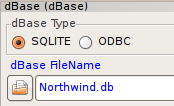
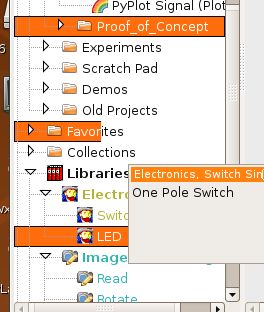
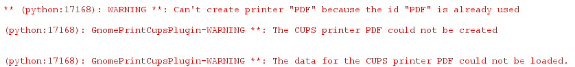
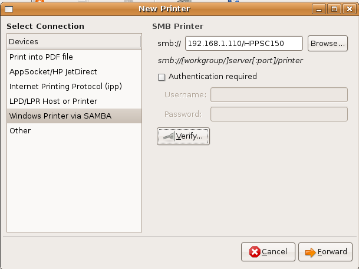
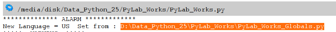

Ubuntu  ( 16 may 2009 )
( 16 may 2009 )
Application Designer / Domain Expert / Control Designer / Core Developer
Should be added to all py-files which can run stand alone.
lxml
After installing lxml, import of lxml succeeds, but import of lxml.html doesn't ??? therefor the Babelfish translation in the languge control doesn't work.
ADC
The AD-converter is a windows executable, written in Delphi, so it will not work under Ubuntu.
MatPlotLib
For some unknown reason, it's not possible to set the size of an embedded MatPlotLib window smaller than some rather large minimum size.
VPython
Under Ubuntu-8, only VPython-3 is available. Replacing it with VPython is a hell of a job. With VPython-3, most examples work quit well, only the specific VPython-5 demos will not work. Although I couldn't find them, there might be a few instructions which are not valid within VPython-3, in that case it should be easy to extend VPython with the missing methods, implemented as just dummy methods.
Pygame
The Pygame standard available for Ubuntu 8, is a little to old (and uses numeric), but it can easily be replaced by the pygame version of Ubuntu 8.10 (Intrepid).
ODBC
Don't know how to attach ODBC, so for the moment the radiobutton has no real functionality under Linux, and other ODBC selections are blocked.

Tree annoyances
The trees in Ubuntu are sometimes not correctly refreshed, resulting in very ugly images, like these:

CUPS Printer errors ?
Some weird error, reported many times on the internet with other programs, but no one seems to have a solution or even an explanation for it. Seems to be a known bug in libwxgtk 2.8.

Installing another printer and setting this new printer as the

PYC
If by accident, pyc files are copied from Windows to Ubuntu, we can get these weird kind of errors:

TextCtrl
SetLabel doesn't work under Ubuntu (results in a empty textbox), SetValue works both on Ubuntu and Windows.
AFAIK all SetLabel are replaced by SetValue.
The same yields for GetTextLabel ==> GetValue